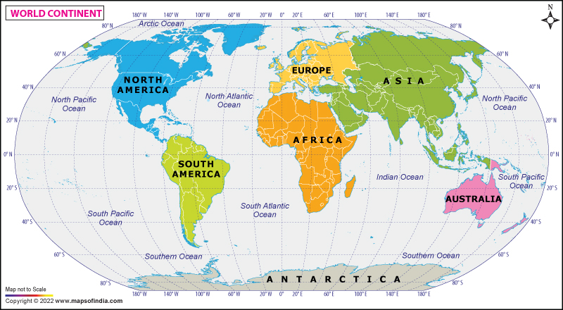

|
WORLD MAP
Explore the Continents of the World! |
Explore the world's continents, countries, and oceans. Click on Asia to explore its countries.

| Continent | Hemisphere / Region |
|---|---|
| Asia | Northern and Eastern |
| Africa | Northern and Southern |
| North America | Northern and Western |
| South America | Southern and Western |
| Europe | Northern and Eastern/Western |
| Australia | Southern and Eastern |
| Antarctica | Southern |
Pacific Ocean | Atlantic Ocean | Indian Ocean | Arctic Ocean | Southern Ocean
| © 2026 | World Map Explorer |